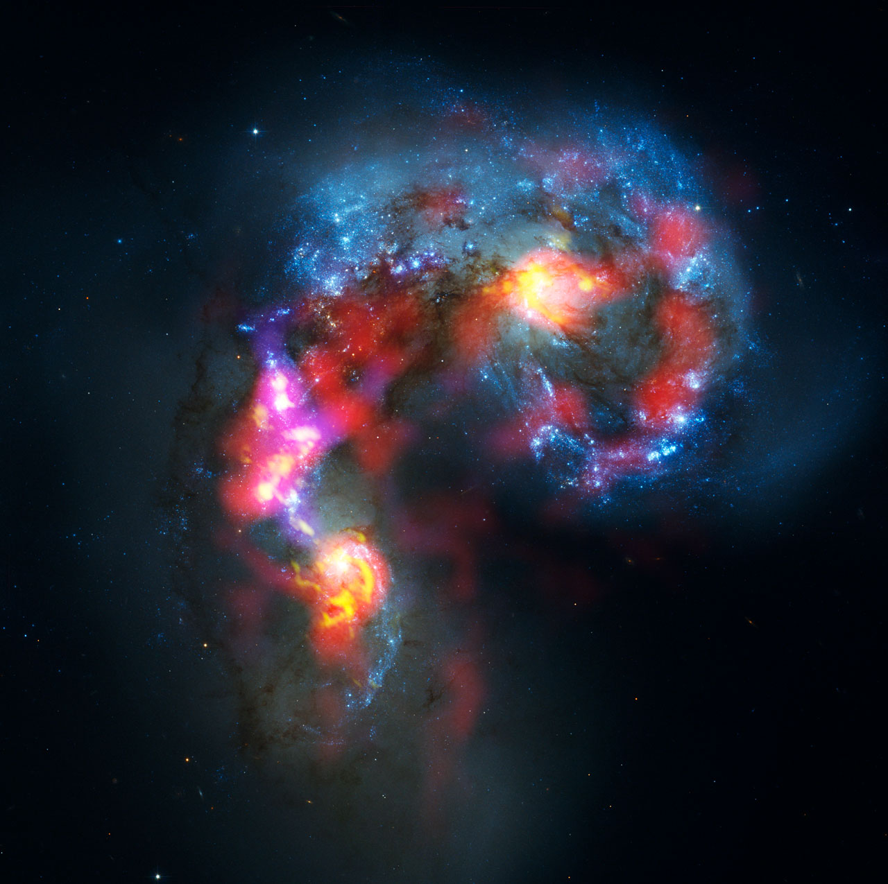
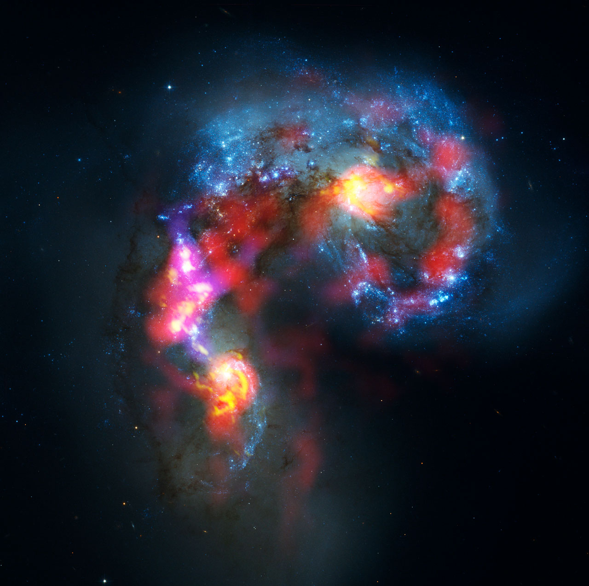

The refracting telescope is one of the simplest to use. There are two lenses in the refracting telescope. Light enters the end of the telesope, the lens refracts or bend the light, and the image is magnified for vieweing through the eyepiece. The refracting telescope can be quite large and heavy. They usually have a large aperture for allowing more light to enter through the primary lens.

This telescope
- Brand: William Optics
- Focal length: 420mm
- Aperture: 71mm
- Type: Apochromatic refractor
- Costs: ~ $933
This type of telescope is known as a catoptrics version of a telescope. The tube and lens system is similar to that of a refracting telescope. There are many things similar, but others are vastly different for a reflecting telescope. The tube allows light to enter through one end. On that end is a primary mirror, and on the other end is a secondary mirror. The primary mirror reflects the light to the secondary mirror and towards the eyepiece. The eyepiece is normally mounted on the side of the tube, which is how you can see the difference immediately in a telescope. Reflecting telescopes are popular because they’re smaller and compact compared to refracting telescopes.
This telescope
- Brand: Skywatcher
- Focal length: 1000mm
- Aperture: 200mm
- Type: Newtonian telescope
- Costs: ~ $700
The catadioptric is a hybrid option based on both reflecting and refracting telescopes. Its name is even a hybrid of the names of the refracting (dioptrics) and reflecting (catoptrics) type of telescope. The interior of the tube has a corrective lens that allows incoming light. The light is reflected from a primary mirror to a secondary mirror. It’s reflected back to the primary mirror and the eyepiece. It’s a great telescope for all kinds of purposes like focusing galaxies and planets for amateur astronomers of all experience – whether beginners or advanced users.

This telescope
- Brand: Celestron
- Focal length: 2350mm
- Aperture: 235mm
- Type: Schmidt-Cassegrain telescope
- Costs: ~ $3200
This type of telescope uses radio waves to create images of far-off celestial bodies. Every object in the sky gives of radio waves. Those waves are read by huge antennas that have large dishes attached. They’re normally not used by amateur astronomers, though. Those huge dishes you see with three spokes in the middle are radio telescopes.
 

Like radio telescopes, x-ray and gamma-ray telescopes use the rays that the bodies of the suns, supernovas, and stars give off to create their images. It’s how astronomers are able to see events that occur in deep space like supernovas and black holes. The gamma-ray telescope detects the burst of gamma rays that help confirm events taking place in space that can’t be detected with visual confirmation. X-ray and gamma-ray telescopes are used at higher elevations, so there’s no worry about pollution altering the images.